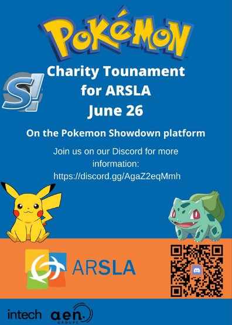

Au sein de notre formation à l'ESIEA, moi-même et trois autres camarades avons organisé un événement visant à collecter des fonds pour l'Association pour la Recherche sur la Sclérose Latérale Amyotrophique (ARSLA). Notre initiative s'est articulée autour de plusieurs objectifs clés :
-
Trouver des sponsors pour soutenir financièrement notre projet.
-
Communiquer efficacement autour de l'événement.
Rassembler des participants pour notre cause.
Collecter des fonds pour soutenir ARSLA.
Après un premier contact fructueux avec l'association, nous avons établi une convention de partenariat et élaboré un dossier de partenariat à leur intention. Nous devions ensuite obtenir la validation de divers visuels auprès de l'association.
Concernant les sponsors, nous avons élaboré des dossiers de sponsoring personnalisés pour chaque entreprise contactée. Malheureusement, nous n'avons reçu aucune réponse positive.
Pour la communication, nous avons opté pour l'utilisation de Twitter et avons contacté des influenceurs à travers divers réseaux sociaux et par e-mail. Malgré nos efforts, seule une réponse négative nous est parvenue.
Quant à la forme de notre événement, nous avons organisé un tournoi Pokémon via "Pokemon Showdown", une plateforme de simulation de combats Pokémon.
En tant que membre de l'équipe organisatrice de l'événement, j'ai joué un rôle crucial dans plusieurs aspects de la préparation et de la réalisation de notre projet.
Tout d'abord, j'ai contribué à l'élaboration des différents visuels nécessaires à la promotion de notre événement. Que ce soit pour les publications sur les réseaux sociaux, les affiches ou les supports de communication.
En ce qui concerne la recherche de sponsors, j'ai été impliqué dans la rédaction des dossiers de sponsoring personnalisés destinés à chaque entreprise contactée. Par ailleurs, j'ai activement participé aux actions de communication, notamment en envoyant des messages aux influenceurs sur Twitter et à travers d'autres réseaux sociaux.

Malgré notre engagement et nos démarches, force est de constater que notre événement n'a pas atteint les objectifs escomptés avec 126 € récoltés. Plusieurs facteurs peuvent expliquer ce résultat mitigé.
Tout d'abord, notre approche dans la recherche de sponsors peut être remise en question. Peut-être aurions-nous dû diversifier nos canaux de recherche en contactant des entreprises "plus locale" à l'instar de contacter des grands groupes.
De même, notre stratégie de communication aurait pu être plus ciblée et créative. La réponse négative des influenceurs souligne peut-être un manque de pertinence dans notre approche ou une méconnaissance des attentes de notre public cible.
En conclusion, cet événement nous a permis de tirer des enseignements précieux sur les aspects à améliorer dans la planification, la mise en œuvre et la promotion de projets similaires à l'avenir.